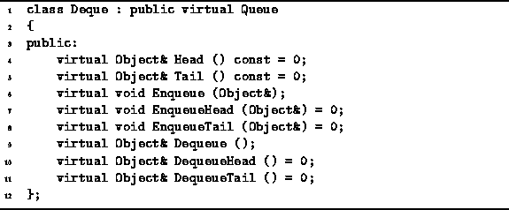
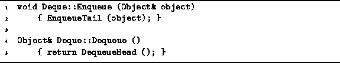

Data Structures and Algorithms
with Object-Oriented Design Patterns in C++
Data Structures and Algorithms
with Object-Oriented Design Patterns in C++
In the preceding section we saw that a queue comprises a pile of objects
into which we insert items at one and
and from which we remove items at the other end.
In this section we examine an extension of the queue
which provides a means to insert and remove items at both ends of the pile.
This data structure is a deque .
The word deque is an acronym derived
from double-ended queue .
Figure  illustrates the basic deque operations.
A deque provides three operations which access the head of the queue,
Head, EnqueueHead and DequeueHead,
and three operations to access the tail of the queue,
Tail, EnqueueTail and DequeueTail.
illustrates the basic deque operations.
A deque provides three operations which access the head of the queue,
Head, EnqueueHead and DequeueHead,
and three operations to access the tail of the queue,
Tail, EnqueueTail and DequeueTail.

Figure: Basic Deque Operations
Program gives the declaration of the Deque abstract class.
Because a deque is an extension of the notion of a single-ended queue
to a double ended queue,
it makes sense for the Deque class
to be derived from the Queue class.

Program: Deque Class Definition
Notice that the Deque class interface includes the Enqueue and Dequeue operations inherited from the Queue base class. In the base class only one enqueue is required because items are always enqueued at the tail and only one dequeue operation is required because items are always dequeued at the head. However, in a deque items can be enqueued and dequeued at either end.
In order to ensure consistent semantics,
the Deque class provides the default behaviors for
the Enqueue and Dequeue functions
as shown in Program .
Viz., the Enqueue function simply calls EnqueueTail
and the Dequeue function calls DequeueHead.

Program: Deque Class Enqueue and Dequeue Member Function Definitions
Why have we chosen to derive the Deque class from the Queue class and not the other way around? When we have two abstractions, one of which is essentially a subset of the other, there are two possible implementation approaches:
class Queue : public Deque { ... };
The Queue class interface should restrict access to only
those base class member functions that are appropriate.
class Deque : public Queue { ... };
The Deque class inherits and generalizes the interface
of the Queue class.
Often when using generalization, it turns out that the inherited member functions need to be overridden because their functionality needs to be enhanced in some way. In those cases, specialization may be the preferred approach, since only one implementation needs to be written. The more general implementation serves the needs of both the general base class and the specialized derived class.
On the other hand, making the base class more general and the derived class more specialized means that sometimes we have more functionality at our disposal than we really need. If we only have single-ended queues, we don't want the overhead associated with double-ended queue operations. For this reason, we have chosen the generalization approach.
 Copyright © 1997 by Bruno R. Preiss, P.Eng. All rights reserved.
Copyright © 1997 by Bruno R. Preiss, P.Eng. All rights reserved.